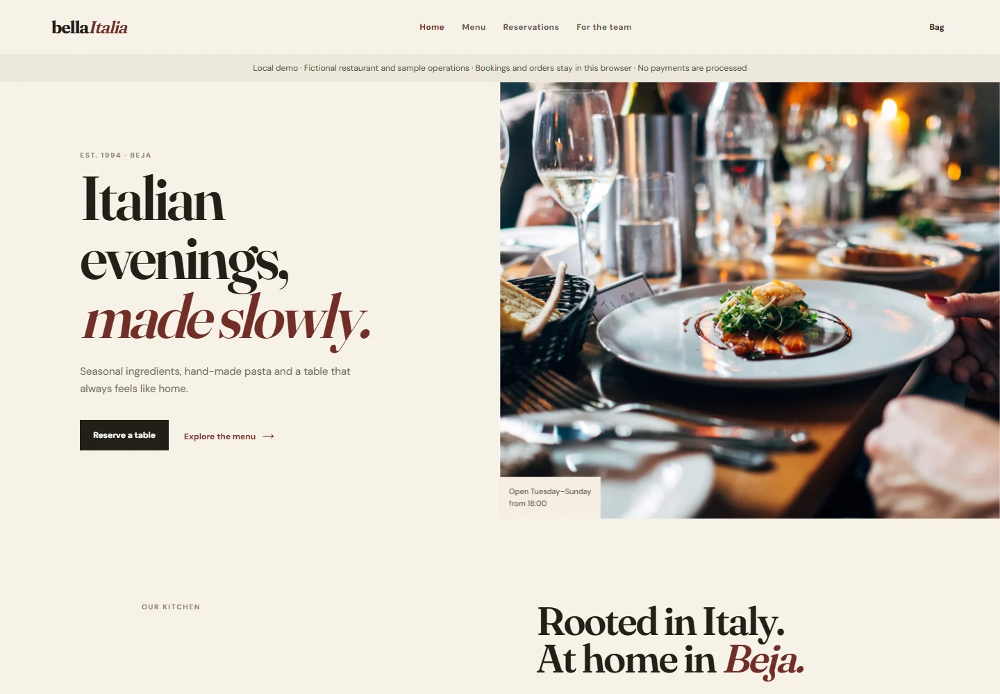

Engineering project · Runtime screenshot
Bella Ops
Connected restaurant customer and operations experiences sharing bookings, menus and orders in one browser.
Local demonstration · Static runtime preview
View GitHub source
Problem
Guest reservations and orders need to reach the operational view, while menu changes must reach customers.
Architecture
Lazy Angular customer and operations routes share TypeScript browser-local stores. SCSS supports the restaurant site and compact operations console.
Engineering decisions
- Keep the existing frontend stack and explicit browser-local scope.
- Validate bookings and integer-cent totals; report failed storage writes.
- Persist customer order/status handoffs and menu visibility across reloads.
Implemented workflow
- Browse the menu, save a reservation and place a simulated collection order.
- Review customer bookings/orders and publish menu prices and availability.
Checks and evidence
Production build and five Chrome regression scenarios passed, including mobile, persistence, denied writes and repeat checkout.
- Verification describes the prepared local checkout on 28–29 October 2026; it is not a production or business outcome claim.
- Prepared improvements have not been pushed; the public repository may differ from this runtime preview.
Scope and next steps
- Fictional restaurant prototype: no backend, real authentication, payments, email or multi-user synchronization.
- Overview sales, staff and charts are sample modules rather than measured checkout analytics.
- 17 dependency advisories remain, including one critical; broader deployment needs remediation.
Technology
Angular · TypeScript · SCSS · localStorage
Preview availability
Screenshots show the prepared local version. Hosted demos remain pending, and source access may require permission. Local setup requirements and remaining limits are documented above.
← Return to portfolio